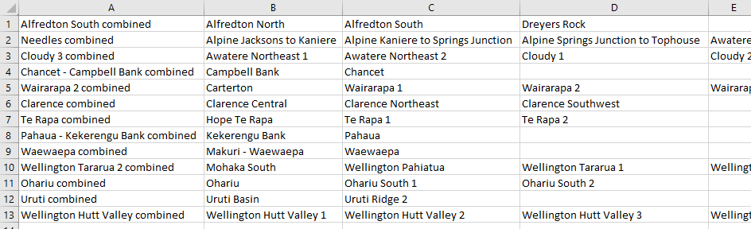
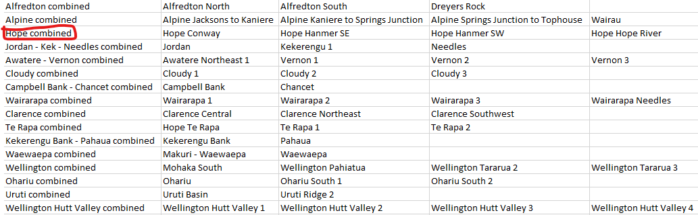
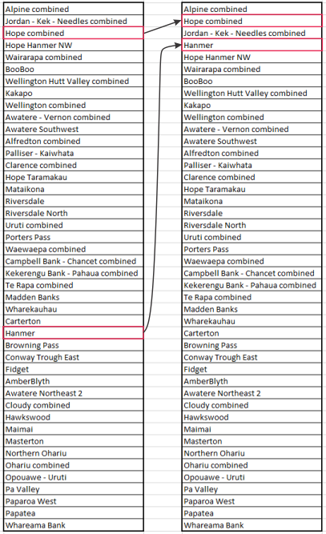

接続された断層システムの定義
このノートブックは、シェープファイル内のどの断層セグメントが大きな断層システムに接続されるべきかを識別する方法を示しています。
まず、関連するモジュールをインポートします
# モジュールのインポート
from fault_mesh.faults.leapfrog import LeapfrogMultiFault
import os
import numpy as np
import geopandas as gpd
有用なパラメータの設定
ここで設定する価値のあるいくつかのパラメータがあります：
EPSGコードによる座標系（ニュージーランドの場合は2193）— これはオプションですが、GISソフトウェアで等高線を視覚化したい場合に便利です。
深度等高線をクリッピングするためのトリミング勾配（\(\alpha_{trim}\)）— Howell et al.（レビュー中）のセクション3.3を参照
\(\Theta_{change}\)を計算するための傾斜乗数とストライク乗数— Howell et al.（レビュー中）のセクション3.3を参照
# 座標系の設定（オプション）EPSGコード
# 必要ない場合はNoneに設定
epsg = 2193
# マルチセグメント断層の深度等高線をトリミングするためのトリミング勾配（アルファ）およびストライクとディップの乗数
trimming_gradient = 1.
dip_multiplier = 1.
strike_multiplier = 0.5
断層の読み込み
まず、断層のGIS表現を読み込む必要があります。この例では、ニュージーランドコミュニティ断層モデル（Seebeck et al., 2022）の断層のサブセットを使用します。
# シェープファイルから断層データを読み込む
fault_data = LeapfrogMultiFault.from_shp("tutorial_gis/central_nz_minimal_data.shp", remove_colons=True, epsg=epsg, trimming_gradient=trimming_gradient,
dip_multiplier=dip_multiplier, strike_multiplier=strike_multiplier)
セグメント間の接続を見つける
データが読み込まれたら、距離許容値を設定する必要があります。この許容値は、接続としてカウントされる2つの断層トレース間の最小水平距離です。
dist_tolerance = 200.
次のセルは、指定された距離許容値内にあるセグメントトレースを見つけるためにpythonモジュールnetworkxを使用します。
fault_data.find_connections(verbose=False)
Found 156 connections
Found 142 connections between segment ends
これらの接続を手動で編集およびレビューするために書き出す必要があります。ファイルはこのJupyterノートブックと同じディレクトリに書き出されます。接頭辞はあなたが指定し、接尾辞は”_suggested.csv”です。
fault_data.suggest_fault_systems("central_gt1_5_connected")
これにより、次のようなCSVファイルが作成されます：

結合された断層システムの名前は最初の列にあり、接続されたシステムを構成する断層の名前は後続の列にあります。
手動編集の実施と組み込み
自動生成された断層システムの提案には（設計上）分割する必要がある過剰に接続された断層システムが含まれます。この段階では、これらのネットワークを小さな断層システムに分割する最良の方法は、CSVファイルを手動で編集することです。以下の例は、Hope Faultシステムを表す新しい行をCSVに追加したものです – Hope Faultは自動生成された接続CSVでAlpineおよびKekerengu-Needles断層システムとグループ化されています。この新しいファイルを保存する際には、上書きしないように異なる名前で保存してください！

必要な編集を行ったら、新しいCSVを読み込んで自動生成された接続断層システムを上書きします：
fault_data.read_fault_systems("./define_connections_data/central_gt1_5_connected_edited.csv")
fault_data.generate_curated_faults()
切断階層の定義
断層システムを定義したら（後でメッシュを作成するために使用します）、他の断層に対してどの断層が終了するかを指定する必要があります。例えば、Hope Faultの西端が深さでAlpine Faultによって切断される可能性が高いようです。この複雑なメッシュ切断は、leapfrogなどの専用ソフトウェアを使用して最も効果的に行われますが、自動的に切断を行うためには、最初に切断階層を指定するのが最善です。
すべり速度に基づく階層の提案
階層の最初のパスは、断層のすべり速度に基づいて純粋に生成できます。既に読み込んだ断層データにすべり速度が関連付けられていると仮定すると、この最初のパスは簡単に行えます：
fault_data.suggest_cutting_hierarchy("central_gt1_5_hierarchy")
この操作は、モデル内の断層（または断層システム）をすべり速度の降順に並べ替えるだけです。異なるすべり速度を持つセグメントを持つ接続された断層システムの場合、その断層システム内の任意のセグメントの最大すべり速度が使用され、切断階層に断層システムが配置されます。
切断階層の編集
次に、ファイル内の行の順序を切り替えることでこの階層を編集できます。交差する断層/システムのペアについては、ファイルの下部に近い断層が上部に近い断層に対して終了します。
編集が望ましい状況の例を以下に示します。Jordan-Kekerengu-Needles Fault Systemの最大すべり速度（23 mm/yr）はHope Faultの対応する最大値（15.8 mm/yr）よりも速いですが、Jordan FaultがHope Faultに対して終了する断層モデルを作成したいと考えています。この終了を実現するために、CSVファイル内でHope combinedをJordan - Kek - Needles combinedの上に移動します。同様の理由で、Hanmer FaultをHope Hanmer NWの上に移動します。

次のようにしてこの新しい階層を読み込みます：
fault_data.read_cutting_hierarchy("./define_connections_data/central_gt1_5_hierarchy_edited.csv")
メッシュ作成のためのシェープファイルの作成
メッシュ作成前の最終ステップは、断層の三角メッシュ表現を作成するためにメッシュ作成ソフトウェアと組み合わせることができるファイルの作成です。 これらの三角形の表面を複数のソフトウェアパッケージ（例えば、MOVE 3D）で構築することは可能ですが、以下の議論はLeapfrog Geoソフトウェアの使用を前提としています。
シェープファイルを保持するディレクトリの作成
組織上の理由から、異なるシェープファイルを異なるディレクトリに配置することが役立ちます
for dir_name in ["depth_contours", "traces", "footprints", "footprints_lines"]:
if not os.path.exists(dir_name):
os.mkdir(dir_name)
シェープファイルの書き出し
for fault in fault_data.curated_faults:
# 深度等高線の生成
fault.generate_depth_contours(np.arange(2000, 32000., 2000.), smoothing=False)
# 等高線をファイルに書き出し
fault.contours.to_file(f"depth_contours/{fault.name}_contours.shp")
# トレースの書き出し
fault.nztm_trace_geoseries.to_file(f"traces/{fault.name}_trace.shp")
# 断層フットプリントの書き出し
for fault in reversed(fault_data.curated_faults):
fault.adjust_footprint()
fault.footprint_geoseries.to_file(f"footprints/{fault.name}_footprint.shp")
# Leapfrog Geoの新しいバージョンでは、断層フットプリントをラインとして書き出す必要があります
fault.footprint_geoseries.boundary.to_file(f"footprints_lines/{fault.name}_footprint.shp")